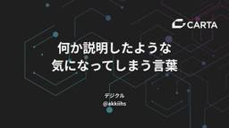

CARTA TECH BLOG
https://techblog.cartaholdings.co.jp/
CARTA HOLDINGS公式エンジニアブログです。CARTA HOLDINGSのエンジニアリング関連の情報、 イベント, エンジニアたちの様子などを投稿しています。
フィード

何か説明したような気になってしまう言葉 1
1
CARTA TECH BLOG
株式会社デジクルの @akkiihs （あっきー）です。評価期に利用する成果資料や、振り返り面談時など限られた時間の中で、相手と認識を揃えた上で議論できるとよいですよね。お互いの認識が揃っていないと、なかなかよい議論に辿りつけないこともあります。そんな認識のズレは、何気なく使ってしまう "何か説明したような気になってしまう言葉" から生まれることがあります。この記事では、そうしたズレを生みやすい言葉をいくつか取り上げてみます。またこの記事では、CARTAのエンジニア評価制度 「技術力評価会」を前提に話を展開します。技術力評価会は、エンジニアが自身の取り組みを資料にまとめ、評価者との対話を通じて技術力を評価する仕組みです。GitHub上に過去10年分ほどの資料が積み上がっていて、評価資料を書き、文脈のない人に自分の成果を伝えられることがCARTAエンジニア評価における重要な軸となっています。また、記事中に登場する言葉の登場回数は、過去資料における登場回数を数えたものです。普段から、こういった言葉に踊らされないように、自分の言葉で伝えられるようになっておくとよいでしょう。さまざまな人と一緒に仕事を進めていくためにも、重要なスキルだと思います。では具体を見ていきましょう。 コスト個人的に一番何か説明した気になってしまう言葉は「コスト」です。一概にコストといっても、金銭的なコスト、時間的なコスト、工数的なコスト、運用的なコスト、精神的なコスト、さまざまな解釈ができます。そこで伝えたいのは、何のコストでしょうか？誰にとって、どれくらいのものでしょうか？※ 評価資料内での「コスト」の登場回数（日本語一般名詞での登場回数多い順）は、2024年下期 284回（16位）、2025年上期 193回（23位）、2026年上期 247回（19位）リスク次に「コスト」ほど評価資料内での登場回数は多くないですが、「コスト」と肩を並べるくらいに何か説明した気になってしまう言葉は「リスク」です。こちらも、セキュリティ的なリスク、運用的なリスク、納期的なリスク、法的なリスク、さまざまな解釈ができます。そこで伝えたいのは、何のリスクでしょうか？具体的にそれができないと何にとっての脅威（または機会）となるのでしょうか？リターン上記の「コスト」や「リスク」の話をする上で、セットで語られたいのが「リターン」
6日前

ジュニアこそやるべき！？アラート対応の考え方と実践
CARTA TECH BLOG
はじめにこんにちは。fluctのshunshunです。アラート対応って、なんか難しそうなイメージありませんか。 私は最初そうでした。 何が起きているのかもわからないし、どこから見ればいいのかもわからなかったからです。ただ、しばらくやってみると、見る順番はだいたい決まっていました。 今はチームの中でも見ている方なので、その順番を書き出してみます。私自身もジュニアなので、ジュニア目線の話になります。 同じくらいの立場の人のためになると幸いです。考え方アラートには全部対応する。無視しない無視していいアラートは、アラートに出す必要がないアラートです。 閾値を変えるか、条件を変えるか、消すかします。 「見なくていいやつ」として鳴り続けている状態が一番よくないと思っています。鳴っても誰も動かないアラートは、鳴るたびにチームの集中を持っていきます。 そして本当に問題が起きたときに、一度流されて対応が遅れます。優先度はつけていい。やらないはない全部を今すぐやれという話ではないです。 ユーザーに影響が出ているものが先になります。 それ以外も、その場で終わる規模ならそのまま片付けてしまうことは多いです。 後回しにする場合は、後で拾える形にして置いておきます。「そもそも出すべきだったか」まで見るアラート対応をエラーを直すことだと思っていると、半分しかやっていません。 残り半分は、このアラートは鳴るべきだったのかを考えることです。直すべきエラーだったのか閾値がキツすぎただけなのかそもそも監視する対象がズレているのかここまでやると、次からアラートが1個減ります。実践下準備AIは便利です。 Slack や Datadog は MCP などで繋いでおきます。 投げるだけで解決してくれることも多いです。原因を追うアラートの出方は、だいたい2パターンに分かれます。エラーが出たときやることはだいたい決まっています。エラーログを読んで、どういうときに起きるのか、起きると何が困るのかを掴むいつから出ているか、どのくらいの頻度・どんなパターンで出ているかを調べる過去に同じ対応がないか漁るユーザー影響が大きいものから潰す「いつから」がわかるとリリースが特定できます。 「どんなパターンで」がわかると再現条件が見えます。 この2つが出れば、だいたい半分終わりです。指標の傾向が変わったときエラーレートが跳ねた、みた
9日前
【大吉祥寺.pm 2026】Foodスポンサー協賛 & セッション登壇レポート！
CARTA TECH BLOG
CARTA HOLDINGSは、2026年7月25日に開催された「大吉祥寺.pm 2026」にFoodスポンサーとして協賛し、スタッフエンジニアのbash（@bash0C7）がセッション登壇を行いました！ 今回は当日の模様をレポートします。大吉祥寺.pm とは「大吉祥寺.pm 2026」は平日夜に開催されている勉強会「吉祥寺.pm」の拡大版として、土曜日に終日開催されるテックカンファレンスです。今年で3回目の開催となりました。今年のテーマは 「かわるもの、かわらないもの」。 AIの台頭で仕事やエンジニアリングのあり方が大きく変化する中で、変わらず重要であり続けるもの・改めて価値が見直されるものを問うテーマです。会場もこれまでの吉祥寺から初の大井町開催へ。場所は変わっても、ワントラックで全員が同じセッションを聞き、参加者同士が同じ内容で語り合えるスタイルは変わりません。開催概要日時：前夜祭 2026年7月24日（金）／本編 2026年7月25日（土）会場：きゅりあん（品川区立総合区民会館）主催：吉祥寺.pm と JPA（Japan Perl Association）の共同開催kichijojipm.connpass.com登壇セッション：テックカンファレンス三大ステークホルダーの文化人類学 ─ 違いを認め合う関係性作りプロポーザル採択による30分のトーク枠として、CTO室 スタッフエンジニアのbash（@bash0C7）が登壇しました。CTO室 スタッフエンジニア @bash0C7「テックカンファレンス三大ステークホルダーの文化人類学 ─ 違いを認め合う関係性作り」というテーマで、参加者・運営・スポンサーという三者それぞれの論理を解像度高く分解し、「三方よし」を成立させる協働設計を語るセッションを行いました。 speakerdeck.com主な要点は以下の通りです。話したのはこの3点です。三者の論理はどれも正しい。だからこそすれ違う参加者・運営・スポンサーはそれぞれ合理的に動いている。自分の「当たり前」が当たり前すぎて、他ロールの論理に気がつけないことがすれ違い発生の起点。カンファレンスは商取引ではなく贈与経済「払った分の対価」を求める give & take ではなく、それぞれが持ち寄る give & gift の場。技術コミュニティは参加者・運営・スポンサーが場に
19日前
【技育祭2026 関西】スポンサー登壇 & ブース展示を行いました！
CARTA TECH BLOG
CARTA HOLDINGSは、2026年7月11日に開催された「技育祭2026【関西】」に協賛し、ブース出展およびスポンサー登壇を行いました！ 今回は当日の模様をレポートします。技育祭【関西】とは技育祭の「地方開催Ver」といった形で、今回は大阪で行われた技育祭に出展してきました！geek.supporterz.jp「技育祭」は、技術の知見を共有し視座を高め合う場である「テックカンファレンス」を、学生向けに凝縮した国内最大級の祭典です。今回はその関西開催として行われました。スポンサーブース、ライトニングトーク、ミニセッション、抽選会、懇親会と、ITエンジニアを目指す学生のためのコンテンツが一日に凝縮されています。先着300名の定員が好評につき400名へ拡大されるなど、関西の学生の熱量を感じるイベントとなりました。開催概要日時：2026年7月11日（土）13:00〜18:30（12:00開場）会場：コングレスクエア グラングリーン大阪 グランホール対象：ITエンジニア職を目指す学生・興味がある学生参加費：無料主催：株式会社サポーターズ 技育プロジェクト運営事務局登壇セッション：テックリードが学生に戻って "強くてNew Game "するなら？ 〜成長の攻略本〜今回の登壇には、fluct プロダクト開発本部 プラットフォーム部 エンジニアリングマネージャーのみっさん（中崎満晶）が登場。「テックリードが学生に戻って "強くてNew Game "するなら？ 〜成長の攻略本〜」というテーマで、"今の知識や経験を持ったまま、学生のこの時期からやり直せるなら何をするか" をゲームの攻略本になぞらえて語るセッションを行いました。 speakerdeck.com主な要点は以下の通りです。渡すのは「エンジニアとしての成長の攻略本」Lv1（基礎体力）〜Lv3（実践の壁）の3フェーズで成長の全体像を示し、「今どこにいるか」を自覚し壁を超えることがこのセッションの目的。AI時代でもオーナーは自分AIが書いたコードも理解する。迷ったら公式ドキュメントなどの1次情報へ。理解が深いほど、AIへの問い（指示）が鋭く、力に変えられる実践の壁は「トレードオフのストーリー」で超える設計意図は「何を捨てたか・なぜ捨てたか」で語る。実装の"次"は、実際に使われているシステムに携わること。「全部やる必要はない
1ヶ月前
JSAI2026参加！データサイエンスエンジニアの体験記
CARTA TECH BLOG
はじめに株式会社CARTA ZEROのsakakeyと申します。この度、群馬県の高崎にて開催されたJSAI2026(人工知能学会全国大会2026)にデータサイエンスエンジニアとして参加してきたので、その体験記として綴っていきます。我々について今回は、CARTA ZERO、テレシー、CARTA AI Labという3つの組織で合同で参加し、ブースを出展しました。CARTA ZERO、テレシーは、CARTA HOLDINGSの子会社として存在します。また、CARTA AI Labは、全社を横断してAI利活用に取り組む組織で、事業課題の解決や基盤の構築などに取り組んでいます。データサイエンスエンジニアや普段の仕事については、以前こちらにまとめています(社名が変わってしまっていますが)。お時間があればご覧ください。techblog.cartaholdings.co.jp我々は今回、主に採用&技術のキャッチアップのためにJSAI2026に参加しました。そもそもJSAIとは機械学習からLLM、数理最適化やロボティクスまで、おおよそAIと呼ばれるものについて垣根なく取り扱う学会https://conf.ai-gakkai.or.jp/jsai2026/開催：高崎 6/8〜6/12参加人数はなんと4868人！JSAI2026の参加者数は、昨年を超え過去最多の4868人を記録しています！#JSAI2026 pic.twitter.com/3fws1CxSxH— JSAI2026 @ 群馬&オンライン (@jsai_official) 2026年6月8日 全体の所感非常に大規模！今回も非常に規模が大きかった特に企業ブースに関しては1つの大会場に100を超えるブースがひしめいており、物量が凄まじかった。大きな会場で複数のセッションが並行して走っており、トピックを絞らないとまとめきれなくなってしまう学生と社会人の比率は体感半々JSAIは学生が多い印象があったが、今回は半々くらいに感じた発表トピック今回は、LLMの応用研究が最も数が多いトピックだった去年よりも詳細なドメインや実応用に目を向けた研究が多かった印象があったその分、研究として我々に刺さるものを探すのは難しかったと感じたセッション発表は、大まかに技術的に新規性のある発表と、企業での既存技術の利活用の発表に分かれていた今回は後者が多かっ
2ヶ月前
Snowflake Summit 2026 に行ってきた
CARTA TECH BLOG
はじめにはじめまして！CARTAエンジニアの宮前です。6/1 ~ 6/4 にサンフランシスコで開催された Snowflake Summit 2026 に参加してきました。4日間、セッションを聞いて、ブースを回って、夜は現地の日本勢と飲んで、というのを朝から晩まで繰り返してきました。サミットの詳細なアップデート情報は他の方の参加レポや公式ブログがすでに山ほどあると思うので、ここでは「現地の温度感」や「行ってみないとわからなかったこと」を中心に書いていきます。なんで行ったのか実は毎年行きたいとは思っていました。ただ、同じ会社の人が手を挙げているのを見て、なんとなく遠慮してました。現在自分はデータチームに所属しているわけでもないというのも遠慮の理由としてはありました。とかなんとかで行かない理由はいろいろあるけど、行きたいものは行きたいということでとりあえず手を挙げました。参加表明参加が決まって、英語の勉強でもしておくかとか思ってましたが、気づいたらフライトの日になっていました。Duolingoはインストールだけして、一度も起動することはありませんでした。ごめんDuolingo。現地の雰囲気会場は Moscone Center で、参加者は 2 万人超だったみたいです。会期中ずっと印象に残ったのは、1 つのサービスを軸にこれだけの人とパートナーが集まる熱量 です。ブースを覗けば知らないツールがたくさんあり、廊下を歩けば各国から来た人たちがその場でデータの話をしていて、夜には公式・非公式のイベントが並行して走っているような状態でした。ブースに関しては、とりあえず気になったところに飛び込んでデモを見せてもらうのが一番効率が良かったです。話しかければ向こうも喜んで説明してくれますし、動いているのを見ながらの質問や説明であればコミュニケーションしやすかったです。セッションは、人気どころは予約で埋まっていて、当日枠は 開始 30 分前から並んでいないと厳しい印象でした。並んでみて入れなかったセッションもいくつかあったので、来年以降参加する方は予約必須です。サミットのスケジュール↑こんな感じでサミット前にページから予約する。埋まってるセッションはお気に入りに入れておいて並ぶ。AIのおかげでセッションの内容も理解しやすかったスマホのレコーダーで録音 → 文字起こし → AI に要約させる
2ヶ月前
fluctエンジニアの合言葉: fluct-engineering-handbookの紹介
CARTA TECH BLOG
こんにちは。fluct CTO の @yowatari です。fluctでは、エンジニア組織が同じ方向を向いて価値を生み出すためにいくつかの試みを推進しています。今回はその中でも fluct-enginnering-handbook を紹介します。github.comエンジニアの仕事は、ただ「プログラミング言語を使ってコードを書く」だけではありません。私たちの本当の役割は、「技術の力を使って、ビジネスの複雑な課題を解決し、価値を届けること」だと考えています。しかし、開発の現場では「どちらの設計が良いか？」「今、何を優先すべきか？」と迷う場面が少なくありません。そんなとき、チーム全員が同じ方向を向いて判断を下すための「合言葉」がfluctにはあります。それが、「エンジニアリング憲章」と「5つの行動指針」です。今回、私たちの手の内とも言えるこのドキュメントを公開することにしました。この記事では、なぜ私たちがこれらの言葉を大切にしているのか、その背景にある想いを中心にご紹介します。エンジニアリング憲章「fluctのエンジニアはどうあるべきか」という理想を記したものです。私たちが何よりも大切にしているのは、使い物になるソフトウェアを目指すことです。不具合が起きた時、その場しのぎで直すのではなく「なぜ起きたのか」という根本に向き合う。それが、結果として未来の自分たちや、サービスを使ってくださるお客様を助けることになると信じているからです。AI時代の「たくさんやる」とは？憲章の中には「たくさんコードを書き、たくさんリリースし、小さく失敗しよう」という一節があります。力技のように聞こえるかもしれませんが、AI技術の進化に伴い、この解釈もアップデートしていこうとしています。これからの「たくさんやる」とは、「たくさんAIに働かせよう」ということです。エンジニアの役割は、コードを書くだけでなく、AIという強力なエンジンを制御する「手綱（ハーネス）」の設計者へとシフトしてきています。質の高い手綱を設計し、最高のスループットとスピードで事業価値を最大化することを目指しています。5つの行動指針日々の現場で迷わないために、そして、より高い理想へと近づくために、合言葉として使いこなせるように5つの行動指針を設定しています。Be Public： 知恵を独り占めせず、オープンにすることでチームの限界
3ヶ月前
Claude Code の statusLine を3行にしたら、日々のトークンモニタリングが快適になった
CARTA TECH BLOG
CARTA fluct エンジニア の なっかー @konsent_nakka です。ちょっとした不安、ありませんかClaude Code を流し見していると、「いまモデル何だっけ」「コンテキスト残量どれくらい？」「rate limit はあとどれくらい？」が、やんわり気になることがあります。/status や /context を都度叩けば確認できるんですが、思考と作業の流れが切れる。結局そのままスルーして、画面に Compacting... が出てから「あ、まだやることあったのに」と後悔する、というのを何度かやりました。statusLine を3行構成に育てたところ、この「うっすら不安」がほぼ消えました。同じことで困っている人向けに、設定をそのままコピペできる形でまとめておきます。そもそも statusLine とはClaude Code のプロンプト入力欄のすぐ下に常時表示される情報バーが statusLine です。settings.json から外部スクリプトを呼び出す形で中身を自由にカスタマイズでき、ターンごとに再描画されます。デフォルトでは最低限の情報しか出ていませんが、ここに「いま気になっている情報」を盛り込めるのが醍醐味で、本記事ではこの statusLine を3行に拡張する話をしていきます。私の statusLine（実物）実際にいま使っているのがこちらです。📂 ~/dev/my/techblog │ 🌿 master +12 -3🧠 ███████░░░░░░░░ 47% │ 💪 Opus 4.7 (xhigh)🕐 ██████░░░░░░░░░ 40% │ 📅 ███░░░░░░░░░░░░ 18%3行に分けて、こんな情報を載せています。1行目: いま触っている場所（cwd / ブランチ名 / 差分行数）2行目: いま使っている思考リソース（context 残量バー / モデル名 + effort）3行目: 利用枠の消費状況（5h rate limit / 7d rate limit）プロンプト入力欄のすぐ上に常時表示されるので、流し見しているときに視線が自然と statusLine に落ちて、「context 70% 超えたから新しいセッション切るか」みたいな判断ができるようになりました。特に効いているのは2行目です。Opus...
3ヶ月前
Claude Code on the web のクラウド環境を devbox + direnv で構築する
CARTA TECH BLOG
※こちらの手元で調査しながらとは言えAIにまとめてもらった記事なので、念の為手元の環境でも検証することを推奨します。CARTA fluct エンジニア の なっかー @konsent_nakka です。Claude Code をクラウド環境でそのまま実行できるのは嬉しい。ただ言語やツールのバージョン違いやそもそも用意されておらずガードレールとしての役割をさせられない。クラウド環境用のスクリプトを用意するのも大変だったので、既存のdevboxを使ってなんとかならないかと考えて用意したのが今回の設定です。Claude Code on the web のクラウド環境で、プロジェクト固有の環境（特定バージョンの Node や追加 CLI など）を組む方法はいくつかあります。Setup script に apt や curl を素直に並べる方法、asdf / mise を使う方法、Nix を直接導入する方法、そして devbox を使う方法。本記事はそのうち devbox + direnv の組み合わせ を取り上げます。TL;DRClaude Code on the web のクラウド環境で、ローカルと同じ devbox.json を使ったプロジェクト固有環境（Node 等のバージョン固定 + CLI 群）を再現性をもって組む手順をまとめます完成済みの Setup script を 1 枚貼るだけで動くようにしており、後半はその設計判断（踏んだ罠と回避）の解説です読了後、devbox.json をリポジトリに置けば PC とクラウドで同じ環境が立ち上がる状態にできますdevbox / direnv とは読み始める前の前提として、本記事で扱う 2 ツールを一言ずつ。devbox: Nix をバックエンドにしたプロジェクト単位の開発環境マネージャ。devbox.json にパッケージを書くと固定バージョンを展開してくれる。direnv: ディレクトリごとに env を自動で有効化するツール。.envrc を置いておくとそのディレクトリに居る間だけ devbox の環境に切り替わる。なぜクラウド環境と噛み合うかこのプロダクトのクラウド環境は、Setup script の実行結果が filesystem snapshot として焼かれ、2 セッション目以降は snapshot を復元
3ヶ月前
女子高校生がCARTAを見学！Girls Meet STEM イベント開催レポート!!!
CARTA TECH BLOG
技術広報の @ShuzoN です。今回は、次世代のSTEM人材を目指す女子高校生向けにCARTAオフィスで開催されたイベント「Girls Meet STEM」のレポートです！山田進太郎D&I財団が主催する「Girls Meet STEM」は日本における女性高校生のSTEM進学率の向上を目指す取り組みです。2026/05/21に行われた今回は財団のカンファレンスイベント内のデモツアーとして、実際に都内にある十文字高等学校の皆さん約20名がCARTAのオフィスに遊びにきてくれました！👏会の前半は先輩エンジニア3名によるパネルディスカッション、後半は美味しいスイーツを囲んだ座談会が催され、笑い声が絶えない非常に熱気のあるイベントとなりました🍩登壇者プロフィール＆お仕事紹介1. 多賀 茉以子 ： 文学のセカイからエンジニアへ株式会社fluct 広告配信システムエンジニア。文学部出身ながらブログ制作を機にエンジニアを志し、SIerや海外でのプログラミング講師など多彩なキャリアを経験。現在は、運用チームと連携したシステム開発に携わっています。2. 大竹 聡子 ： ゲーム好きが高じてAIのプロ、そして部長へ株式会社TELECY データサイエンス部部長。小学生の頃にゲームのためにマイPCを手に入れたのがきっかけでIT分野を志望。テレビCMの分析AIで特許を取得。現在はLLMエージェント（AIの秘書）の開発に従事している。3. 欧陽 江卉（おーやん / ohyan）： 新卒から一貫してマーケティング×データ×AI株式会社TELECY データサイエンス部所属。データサイエンスエンジニア。通信工学専攻（大学院では音声合成などAIデバイスを研究）。「CMを見た時の感動が人にどれだけ影響するのか？」という問いの答えをデータから探ることに面白さを感じ、新卒から一貫して「マーケティング×データ×AI」の道を歩む。パネル・ディスカッションCARTAで行われたオフィスツアーを終え、少し緊張気味の高校生の皆さん。CARTAの最前線で活躍する3名の先輩エンジニアの紹介へと移りました。1. いまどんな仕事をしている？fluct 多賀さん多賀: スマホやパソコンのサイト・アプリで目にする「広告」をユーザーに届けるシステムを開発しています 。広告の配信設定は非常に複雑な仕組みになっているため、社内の運用チ...
3ヶ月前
OpenTelemetry 設定を組織設定で配布して、Claude Team に所属するユーザー全員の Claude Code 利用状況をSplunkで可視化した
CARTA TECH BLOG
CARTA fluct エンジニア の なっかー @konsent_nakka です。対象読者Claude Team プラン利用者 (おそらくEnterpriseも同様)概要Claude Code は OpenTelemetry を出力できるため、設定さえ仕込めばユーザーごとのトークン消費量やコスト、利用頻度を可観測基盤に集約できます。ただし、これを「組織全体で当たり前に集まる状態」にするには、各メンバーが個別に settings.json を書く運用では限界があります。誰かが書き忘れる、トークンの渡し方をどうするか毎回考える、退職時の取り回しが面倒、といった話が一気に噴出します。Claude Team の 組織設定 には、settings.json を所属ユーザー全員に強制配布する仕組みが用意されています。これを使うと、OTelの仕組みを、ユーザー側の操作を経由せずに配ることができます。fluct ではこれを使って Splunk に Claude Code の利用ログを集約し、ユーザーごとのコスト・トークン消費量の可視化、利用量のリーダーボードを社内に公開しました。結論: 組織設定の settings.json に OTel 設定を一括で配るClaude Team の管理画面から配布する settings.json に、OTel を有効化する env を含めて配ります。設定の中身としては、概ね次のようなイメージになります。{ "env": { "CLAUDE_CODE_ENABLE_TELEMETRY": "1", "OTEL_EXPORTER_OTLP_HEADERS": "X-SF-Token=<splunk-ingest-token>", "OTEL_EXPORTER_OTLP_METRICS_ENDPOINT": "https://ingest.us1.signalfx.com/v2/datapoint/otlp", "OTEL_EXPORTER_OTLP_METRICS_TEMPORALITY_PREFERENCE": "delta", "OTEL_EXPORTER_OTLP_PROTOCOL": "http/protobuf", "OTEL_LOGS_EXPORTER": "none", "OTEL_LOG_USER_PROMPTS": "0", "O
3ヶ月前
RevOps AF US 2026 参加記：目線は近い、でもスピードが違った
CARTA TECH BLOG
こんにちは、近森淳平ことpei0804です。元々はデータ基盤の開発をやっていたところから、業務整理にも踏み込むうちに、いまではRevOpsの設計と構築まで担当するようになりました。これまでの取り組みはRevOpsへ至る道 データ活用による事業革新への挑戦とRevOps実践で学んだ俺が最強のデータ基盤になることの重要性で発表しています。RevOps AF US 2026に参加してきました。ちょうど自社のRevOps設計が一段落したタイミングで、この領域の最先端との距離感を正確に測りたいと思ったのが参加の動機です。「方向性は同じ、でもスピードが違う」というのが、2日間を通じた正直な感想です。見えてきた共通テーマに絞り、自分の目の前の世界との共通点とギャップを書きます。RevOps AF US 2026 とはRevOps AF は、Revenue Operations（RevOps）の専門家コミュニティ「RevOps Co-op」が主催する年次カンファレンスです。2026年のUSカンファレンスは5月6〜7日にサンフランシスコで開催されました。主なテーマと持ち帰り2日間を通じて、以下の3つのテーマがセッションをまたいで何度も出てきました。ボトムアップとトップダウンは両輪: 現場主導の試行は速いがスケールしない、経営主導はリソースを確保できる反面、現場から乖離しやすい。両方が噛み合って初めて変革が定着するアウトプットではなくアウトカムで測る: 経営層が見ているのは仕組みの精緻さではなく成果そのもの。使われているかは見えても、それが成果につながっているかは別問題RevOps の成熟度モデルが Always-on（常時稼働）へ: Reactive（受動）→ Proactive（能動）の2段階で語られてきた領域に、AIエージェントによる第3段階が加わった持ち帰ったのは「方向性は同じ、でもスピードが違う」という感覚でした。テーマ自体は自分の現場でも普段から出てくる話ばかり。差は「実践して失敗して改善した回数」です。RevOpsはSaaSだけの話ではないWhy the Bowtie Is the Right Strategic Framework for Modern RevOps（Steve Busby）RevOpsはSaaSだけの話ではありません。このセッションはその主張を、「Bo
3ヶ月前
Umbrella issue という well-known な 1 単語を覚えただけで、1 日 20 PR がリアルになった
CARTA TECH BLOG
CARTA fluct エンジニア の なっかー @konsent_nakka です。最近 Umbrella issue という言葉に出会って、頭の中がすごい勢いで整理されています。社内でも AI コーディングをガンガン回している人がよく口にしている言葉でした。軽く書きます。tl;dr1 日 20 PR は LLM の精度ではなく、構造化の問題だったUmbrella issue は「複数 PR をまとめる運用」を 1 単語に圧縮している一度立てておけば、自分にも AI エージェントにも「同じ参照点」を渡せる実例https://github.com/facebook/react/issues/16087https://github.com/JedWatson/react-select/issues/4559https://github.com/gatsbyjs/gatsby/issues/219951 日 20 PR の壁は LLM ではなくコンテキストの供給だったAI コーディングをやり込むほど、ボトルネックは LLM 側ではなく自分側にあると気づきます。個別タスクのたびにプロンプトへ具体のタスク指示を書き、1 タスクごとに壁打ちしながら進めているうちは、結局スケールしません。「まずこのツールを入れてね」「その次はツールを使う実装をしてね」を毎回書いているのは、全てのタスクを分割して他の人に仕事を"依頼"している構造と変わらないわけです。裏返すと、先に高品質なコンテキストを入力し自律的に進められる環境ができれば、後続の指示はものすごく薄くて済みます。1 日 20 PR がリアルかどうかは、ここの設計が効くかどうかで決まる、と最近は思っています。well-known な 1 単語は、長い前提説明を肩代わりするある運用パターンに共有された名前がついていると、その 1 単語を投げるだけで前提説明をまるごと省けます。たとえば「依存構造を持つ複数の issue / PR をまとめて、親 issue から checklist で潰していく運用」をゼロから説明すると、それだけで数百 token は持っていかれます。これに well-known な名札がついていれば、その 1 単語に同じ構造が圧縮されていて、長文プロンプトを書く代わりにキーワードを 1 個渡すだけで済みます。人相手
3ヶ月前
Claude Code のスキルをチームで共有して、全員で育てる仕組みを作った
CARTA TECH BLOG
CARTA fluct エンジニア の なっかー @konsent_nakka です。想定読者Claude Code をすでに使い始めているが、チームで設定を揃える方法を探している方AI活用をチーム全体として推進したいが、標準化のアプローチが見えていない方まとめこれが正解と言うわけでもないし、一つのお試しであるClaude Code には「スキル」という機能があり、チームで共有・改善できる共通スキル置き場 + apm（Agent Package Manager） を組み合わせれば、各リポジトリに apm install 一発で配布できるGitHub Actions で定期実行すれば、スキルが毎日自動で最新化されてチーム全員に行き渡る私たちはこの仕組みを skilltree という社内向けリポジトリで実践している課題: チームのAI設定、バラバラになっていませんか？Claude Code を使っていると、リポジトリごとに CLAUDE.md や設定がじわじわと育っていきます。詳しいメンバーのリポジトリには便利な設定が積み上がっているのに、別のリポジトリには何もない。聞けば教えてもらえる、でもそれは何かのタイミングがないとなかなか起きない。チームとして AI を活用しようとするとき、こういう「属人化した設定」の問題は早めに解決しておきたいところです。Claude Code のスキルとはClaude Code にはスキルという機能があります。簡単に言うと、「/skill-name で呼び出せる専用プロンプト集」です。たとえば /code-review と打てば、プロジェクトのコードレビュー手順に沿った動作をする、という具合です。スキルは .claude/skills/<スキル名>/SKILL.md という形式で管理されます。SKILL.md に書かれた指示が、/skill-name を呼んだときに Claude Code に渡されます。便利な点は、このスキルをリポジトリに置いておくことで、チームメンバー全員が同じスキルを使えることです。共通スキルの置き場所を作って、そこに集約する個々のリポジトリで同じようなスキルを育てるのは非効率だし、改善が横展開されません。そこで、チーム全体で共有するスキルを一箇所に集めたリポジトリを作るというアプローチが効きます。改善を一箇所に閉じ込
4ヶ月前
最強の仲間を作る — Claude Codeをプロダクト開発のパートナーに育てた話
CARTA TECH BLOG
これを読むとなにが変わる？Claude Codeを「速いけどなんか違う」と感じている人が、Claude Codeの振る舞いそのものにフィードバックするという発想を持てるようになります。CLAUDE.md・メモリ・Skillsという仕組みで、Claude Codeの判断力をセッションを跨いで育てていく方法論が手に入ります。この記事の3行まとめAIは速いが、ビジネスドメインの文脈を持たないまま使うと根拠のない判断をする「出力の質」ではなく「判断プロセスの質」にフィードバックすると変わる学びを永続化する仕組み（CLAUDE.md・メモリ・Skills）を作ると、育てたAIが資産になるはじめにこんにちは。テレシーでデータサイエンスエンジニア兼PdMをしている ohyan です。テレシーで新しいプロダクトを作っています。私はPdMとして情報設計から参画しており、Claude Codeと一緒に仕様を詰めています。作業スコープとしては、用語集から、情報設計、画面プロトタイプ、システム仕様まで。今回の記事は「AIにコードを書かせる」という話ではありません。もっと泥臭い、「AIを仕事ができる仲間に育てる」話です。試行錯誤の結果、以下の指示をCLAUDE.mdに書き込んだだけで、Claude Codeの振る舞いが大きく変わりました。自分がまとめた内容はすべて自分の言葉で説明できる状態にすること。説明できない場合はユーザーに確認し、回答を自分の言葉で整理し直して再確認する。理解が浅い概念を調査結果のまま転記しない。次の議題に急がず、現在の議題を深く理解してから進む。この記事では、この指示に至るまでの経緯を紹介します。AIに仕様策定を任せたときに直面した問題その問題に対する2つのアプローチ学びを永続化する仕組みとその結果「速いけどなんか違う」の正体は、判断に根拠がないことではないかClaude Codeを使い始めたとき、多くの人がこう感じるのではないでしょうか。指示すればすぐ動く。でも方向がズレている指摘すればすぐ直す。でも「なぜ直したか」を理解していない聞けばそれっぽく答える。でも深掘りすると薄い私は、Claude Codeと一緒にサービスの情報設計をする際に、Claude Codeは上流のデータの依存関係を無視したまま、ある機能を間違った階層に置いてしまうことが多かったです。実際には、
4ヶ月前
GitHubに草が生えない日も、仕事をしてないわけじゃない ── チームの前進に責任を持つ
CARTA TECH BLOG
fluct で広告配信システムのバックエンド開発を担当している佐久間です。 毎日コードを書き、技術で課題を解決していく日々にやりがいを感じてきましたが、プロジェクトリーダーを経験してから少しずつ「景色」が変わってきました。新しくマネージャーやリーダーになってから、こう思うことが増えていませんか？「今日なにしてたっけ？」ミーティングが多くなり、コードを書く時間がなくなった。タスクを振ることが増えた。自分では難しいことを誰かに頼んだり、自分でこなせていないと感じたりしていませんか。「自分、何してるんだろう」という漠然とした不安があるのではないでしょうか。その感覚は自然なものです。コードで価値を出してきたエンジニアほど、草が生えない一日に居心地の悪さを覚えます。でも、それは仕事をしていないのではなく、あなたの責任範囲が変わったということです。タスクを振ることに後ろめたさを持つ必要はありません。自分がタスクを完了させることではなく、チームが前に進んでいる状態を作ることを求められるようになった のです。「なぜ」を持つことが、マネージャーの仕事になるマネージャーになる前は「なぜやるか」を理解した上で「実行すること」が仕事でした。しかし、リーダーシップを執る立場になると、実行の多くはメンバーに委ねられます。その代わり、「なぜそれをやるのか」という旗を掲げ続けることが、あなたの主戦場になります。例えばステークホルダーの意図をチームに届けることや、事業上重要なことが「なぜ重要と判断されたのか」を伝えていくこと。それがマネージャーの役割のひとつです。これはエンジニアリングマネージャーだけでなく、プロジェクトマネジメントをする立場にも同じように当てはまります。私はとあるプロジェクトでプロジェクトリーダーを担い、「なぜ」を持ち続けることの大切さを学びました。「なぜ」には2つの方向があるひとつは、外部への説明です。そのプロジェクトでは、取引先の担当者向けに、広告配信の仕組みについて説明する場面がありました。システムの仕様や動作原理を、技術的な文脈を持たない相手に伝える。不具合があったときは、原因は何で、どう改善し、いつまでに対応するかを答える。この場で曖昧な理解で説明したり、「確認します」ばかりだと事業全体の信頼に影響します。プレッシャーは相当なものでしたが、そこに立ち続けることで説明責任を
4ヶ月前
スレッドをissue化するワークフローをn8n使ってやってみたが最高すぎた
CARTA TECH BLOG
TL;DRn8nでSlackのスレッドをGitHub Issueに自動変換するワークフローを作りました。はじめに今日はn8nを使ってSlackでのやり取りをIssueにしてくれる仕組みを作ってみました。詰まりどころや、実際に作ってみたからわかる良さについて書いていきたいと思います。きっかけシステムを運用していると日々システムに関する問い合わせがSlackで来ます。最終的に出来上がったワークフロー以下のようなワークフローを組んでIssue化を実現しています。実際にn8nを使ってみてデフォルトのノードが優秀すぎるn8nはデフォルトでifやswitch, filterやSlackのAPIなどやりたいことを実現するためのノードが揃っていて、導入のハードルが非常に低かったです。これらを自分で組み立てる必要もないので、準備の手間がほとんどかかりませんでした。検索すると大体の機能が揃っていて充実している直感的で分かりやすいGUI基本的にワークフローを構築するものなので流れを作るのですが、Figmaなどのように直感的にドラッグ＆ドロップしたり、矢印を伸ばすだけで実現できます。例えばこのアクションでは1つ前の出力結果の項目を使いたい場合もドラッグ&ドロップするだけでできます。途中で複数の分岐を作ったり、間に1つ処理を挟んだりなど変更を簡単にできるので、非エンジニアにも扱いやすい仕組みになっていると感じました。途中へのアクション追加や削除も、矢印にフォーカスを当てると選択肢が表示されるまた、1つ前の出力だけでなくワークフロー内の全ての処理をどこからでも参照できるので綺麗なワークフローを頑張って組み上げなくてもいいのも優しいポイントでした。例えば今回のようにSlackの問い合わせを処理する場合、「Slackのトリガーが起動する → 発動したURLのリンクを取得 → スレッドの中身を取りに行く → 内容をAIにまとめてもらう → GitHubにIssueを作りにいく」という流れになります。 このワークフローで最後のGitHub Issue作成時に、2番目のステップで取得したURLのリンクを参照できるので、極論全てを直列に処理してもやりたいことはできます。実行状況を可視化できるのでデバッグ作業が簡単作ったワークフローを動かしてみたいときはExecute Workflowから手動実行が可能で、
5ヶ月前
PHPerKaigi 2026 登壇の裏側と学び
CARTA TECH BLOG
TL; DR想定読者外部登壇に興味があるけれど、一歩踏み出せずにいるエンジニアの方PHPシステムのバージョンアップやリプレイス手法に興味がある方この記事で伝えたいこと「初参加・初登壇」という無謀な挑戦で見えた景色準備不足とプレッシャーに押し潰されそうな時の支え自分の「当たり前」が誰かの「学び」に変わる瞬間はじめにこんにちは。CARTA HOLDINGSのアフィリエイト事業部（広告サービスを運営）でエンジニアをしているyish0です。普段は長年運用されているPHPシステムの保守や、PHPのバージョンアッププロジェクトに携わっています。先日、PHPerKaigi 2026にて、自身初となるカンファレンス登壇をしてきました。右も左もわからない状態からのスタートでしたが、そこには想像以上の苦しさと、それを上回る収穫がありました。登壇内容は以下の資料にまとめていますので、よければ先にご覧ください。fortee.jp24時間無停止で運用され、毎月しっかりと売上を生んでいるものの、PHP 5.6 / Amazon Linux 2 という古い環境で動いているアフィリエイト広告サービスのPHPバージョンアップ事例(PHP 5.6 → 8.4)を紹介しました。登壇のきっかけきっかけは、技術広報の@ShuzoN__さんと同じ事業部のエンジニアの@brtriverさんからの「いいネタの仕事やってるし、出てみれば？」という一言でした。正直、この仕事の話がそんなに面白いかな？という思いがありましたし、そもそもカンファレンスに参加したこともない自分が、初参加で登壇デビューするのはハードルが高すぎないか？とも思っていました。ただ、プロポーザルを出してみるだけですし、よくない経験になったらやめればいい。逆にこういう機会がないと自分は今後も登壇しないだろうなという思いで、とりあえずプロポーザルだけは出してみることにしました。そしたらまさかの採択。こうして初登壇が決まりました。うまくいかない発表スライド準備実はこの発表テーマの仕事はまだ全然終わっていない話で、なんなら発表を期限にして仕事を終わらせよう！くらいの気持ちでした。せめて発表当日までに一部のエンドポイント移行（バージョンアップ対応済みのエンドポイントを新環境に移行する）だけでもしていないとダサい。そこで昼はバージョンアップ、夜はスライド作成に取
5ヶ月前
【技育祭2026 春】🌸 スポンサー登壇 & ブース展示を行いました！
CARTA TECH BLOG
CARTA HOLDINGSは、2026年3月21-22日に開催された「技育祭2026 春」に協賛し、ブース出展およびスポンサー登壇を行いました！ 今回はその熱気あふれる当日の模様をレポートします。技育祭とはgeek.supporterz.jp「技育祭」は、技術の知見を共有し視座を高め合う場である「テックカンファレンス」を、学生向けに凝縮した国内最大級の祭典です。業界を牽引するトップエンジニアによる講演、スポンサーと直接話せるブース、学生の成果発表など、刺激的なコンテンツが多数用意されています。最新技術からキャリア論まで幅広く学び、仲間と繋がることができる、エンジニアを目指す学生のための最高のきっかけです。登壇セッション：「何を作るか」でなく「何を解くか」今回の登壇には、fluct SSP&アドサーバー部 副部長のなっかー（@konsent_nakka）が登場。なっかー(@konsent_nakka)「『何を作るか』でなく『何を解くか』 事業をエンジニアリングし、AIと共に進化する」というテーマでセッションを行いました。 speakerdeck.com主な要点は以下の通りです。エンジニアの勝負所は「なぜ」を問うこと：実装がAIで圧縮された今、エンジニアの本質は課題を自分ごととして捉え、「なぜやるのか」「何を解くのか」を決めることにある。不確実性への挑み、答えを見つけること：インボイス制度対応などの実体験を通じ、正解がない中で不確実性を下げ、今ある手札で決断する重要性を強調。ビジネスと開発のダブルループを回すこと：開発は事業活動の一部であり、両方のサイクルを回して「事業を技術で進化させる」ことがエンジニアの仕事の本質である。「AIを加速装置にするためには、問い続ける力が必要」というメッセージに、多くの学生が真剣に耳を傾けていました。ブース展示：あなたが今後目指したいエンジニア像は？ブースの様子今回のブースでは、学生のみなさんと「これからのエンジニアの在り方」を共に考える、体験型のボード企画を実施しました。ボード企画企画の趣旨AIの台頭により「実装」の在り方が劇的に変わる中で、「自分が今後どこに軸足を置いて成長したいか」を共に考えるのがこの企画の狙いです。「技術の深掘りか、ビジネスへの活用か」「個のエースか、チームの牽引か」という4象限のボードを用意し、今の直感でシール
5ヶ月前
【PHPerKaigi 2026】エンジニア登壇！キーワードは『延命』リプレイス困難システムの現実的バージョンアップ戦略
CARTA TECH BLOG
技術広報 @ShuzoN です。今回は当社からCARTA ZEROのエンジニア 李丞浩(以下、yish0) がプロポーザル採択され登壇しました。その概要と様子をお届けします。登壇：「キーワードは『延命』 ― リプレイス困難システムの現実的バージョンアップ戦略」CARTA ZERO 李丞浩(yish0) 「キーワードは『延命』 ― リプレイス困難システムの現実的バージョンアップ戦略」 というテーマで登壇。登壇では、24時間無停止で運用され、毎月しっかりと売上を生んでいるものの、PHP 5.6 / Amazon Linux 2 という古い環境で動いているアフィリエイト広告サービスのPHPバージョンアップ事例を紹介しました。 speakerdeck.com触るのが怖い「稼ぐレガシー」への挑戦このシステムは、仕様書もなくドメイン知識を持つ人もいない中、230本のエンドポイントを抱えていました。テストカバレッジも20%以下という状況で、「リファクタリングしてから」といった悠長な時間をかけられない制約の下、 「延命」 をキーワードに現実的な戦略を提示しました。アクセスログによるスモークテスト: 既存のテストでは不十分なため、アクセスログから有効なエンドポイントを特定し、リプレイテストを実施することでエラーの有無を地道に確認GoReplayによるミラーリング検証: 「同じInputなら同じOutputが出る」ことを担保するため、本番トラフィックをミラーリングサーバーに流し、レスポンスを比較検証する仕組みを導入ワンコード戦略: spl_autoload_register を活用し、PHPのバージョンに応じて動的にロードすることで、一つのブランチでPHP 5.6と8.4の両方を動作させる工夫を凝らす失敗から得た「安全フェンス」の教訓プロジェクトの途中で、ログディレクトリの権限付与ミスにより成果記録が止まってしまうというトラブルも経験しました。 アラートは設定されていたものの、実は2021年から動いていない状態だったことが発覚。 この苦い経験から、サービスの根幹を守るための「安全フェンス（本番で一連の流れを常に叩いて確認する仕組み）」を導入し、最悪の状況を即座に検知できる体制を整えています。まとめPHPerKaigi 2026では、登壇を通じて、高すぎる理想に縛られず「延命」という現実
5ヶ月前
自分の分身エージェントを作ってClaude Codeに全部やらせる
CARTA TECH BLOG
TL;DRissueを渡すだけで調査・計画・実装・レビュー・PR作成まで自動化するSkillを作っている人間の判断が必要な部分をなくすため、自分の分身エージェント /white-hedgehog を追加した自分の判断基準を言語化してエージェントに持たせることで、意思決定ごと任せられるようにした実際はうまくいかないことも多く、プロンプトを地道に修正している判断基準の言語化が、思考を整理する副産物になったはじめにfluctでデータエンジニアをやっているyanyanです。最近、新規プロダクトの開発やデータ基盤の整備など、自分の仕事の守備範囲がじわじわ広がってきています。コードを書かせたりコードリーディングをさせるのは以前からやっていました。ただ、実装の方針を決めたりAIの成果物をレビューする部分は結局自分でやっていて、そこに地味に時間がかかっていました。「ここもAIに任せられるのでは？」と思うようになったのが、このSkillsを作り始めたきっかけです。そういう経緯で作り始めたのが、issueを渡すと調査・計画・実装・レビューまで全部やってくれるClaude Code Skillsです。今回はそのSkillsに関する話と、さらにそこから、「自分の分身」となるオーケストレーターエージェントを追加して、人間が関与する部分をさらに減らそうとした話をします。開発を自動化するClaude Code SkillsClaude Codeには、独自のカスタムコマンドを定義できる「Skills」という仕組みがあります。コマンドの中でどんなエージェントを呼んで何をさせるかを指示として書いておくと、/コマンド名 の形で呼び出すだけで一連の作業が動き出します。手始めにこの仕組みを使って /issue-dev というSkillsを作りました。issueの番号を渡すと以下をすべてやってくれます。実装方法の調査・比較実行計画の作成実装コードレビューdraft PRの作成ただ、最初の設計では人間が判断を挟むタイミングが2回ありました。複数の実装方針の中からどれで進めるかを選ぶとき最終的な成果物（draft PR）を確認するときこの構成でもかなり自動化できていたんですが、「もっと手を離せないか」という気持ちが出てきました。各エージェントの出力を次のエージェントにそのまま渡すだけで、出力品質を磨く仕組みがなか
5ヶ月前
【JSAI2025】人工知能学会全国大会（第39回）に初の学会ブース出展をしてきました
CARTA TECH BLOG
技術広報 @ShuzoNです。人工知能学会 (JSAI) 2025 にスポンサーとして出展してきました。日程: 5/27(火)-5/30(金)場所: グランキューブ大阪(大阪府)site: https://www.ai-gakkai.or.jp/jsai2025/TELECY x CARTA ZEROのエンジニア + CTO、計10名で行ってきました🚄JSAI 2025 とはそもそも人工知能学会全国大会、略してJSAIとはなにか。ここでは wikipedia を当たります。一般社団法人人工知能学会（じんこうちのうがっかい、英; The Japanese Society for Artificial Intelligence）は、人工知能（AI）に関する研究の進展と知識の普及を図り、もって学術・技術ならびに産業・社会の発展に寄与することを目的として設立された、日本の学会。今年は以下の日程で行われました。日程： 2025年5月27日（火）～5月30日（金）会場： 大阪国際会議場（グランキューブ大阪）＋ オンライン公式サイト: JSAI2025 – 2025年度 人工知能学会全国大会（第39回）JSAI2025 タイムテーブルの一部なんと4日間もある長丁場。18並列で口頭セッションが行われ、その裏ではポスター発表もあります。おそらく国内でも有数で巨大な学会です。そんな中、CARTAはその中で何をしてきたかざっくりレポートします。ブース出展4日通算でおよそ300-400名程度の方にお越しいただきました。ブースでは、TELECYやCARTA ZERO (当時、CARTA MARKETING FIRM)のデータサイエンスエンジニアが作ったポスターを掲載。また、CARTA AI Lab の取り組み事例を紹介するボードも掲示。ブースはかなり盛況で、割とずっと人が訪れてくれるような状態でした。CARTA ブースの様子2つの事業部のデータサイエンスエンジニアたちと総力戦で4日のブースを回してきました👏ポスター【TELECY】TELECYのポスターでは、テレシーアナリティクスについて紹介。「アドストックモデル」を用いたテレビCMの効果分析手法について解説しています。TELECY テレシーアナリティクスで利用しているアドストックモデルに関するポスター従来、テレビCMの効果測定は「放送さ...
6ヶ月前
CARTA HD、「Engineering Management Conference Japan 2026」にオペレーショナルスポンサーとして協賛 ～ 会場内配信およびアーカイブのテクニカルサポートを担当。ブース出展も～
CARTA TECH BLOG
株式会社CARTA HOLDINGS（東京都港区、代表取締役社長 執行役員：渡邉 英樹、代表取締役副社長 執行役員：髙橋 学、以下「CARTA HD」）は、2026年3月4日（水）にTOC有明（東京都江東区）にて開催される「Engineering Management Conference Japan（EMConf JP） 2026」に、昨年に引き続きオペレーショナルスポンサーとして協賛します。本年度は会場内パブリックビューイングおよびセッションアーカイブのテクニカルサポートを担うほか、企業ブースにて「エンジニアリングマネージャー（EM）とプレイスタイル」をテーマにした展示・交流企画を実施。CARTAが大切にする「先人に感謝し、還元する」という価値観のもと、技術コミュニティのさらなる発展に貢献してまいります。■ ブース企画テーマ：AI時代のEMにおける「プレイスタイル」の変化今年のCARTAブースでは、「AIが登場して働き方が変わる中で、エンジニアリングマネージャー（EM）としての現状の役割や、自身の理想とするプレイスタイルは変化しているか？」をテーマにした展示・交流企画を用意しています。急速な技術変化の中で、マネジメントの在り方をどのように模索しているか。CARTAにおける試行錯誤も交えながら、来場者の皆様と語り合える場を目指します。■ CARTA HDによる会場内配信およびアーカイブのテクニカルサポート当日会場内のパブリックビューイング配信および、各セッションを後日公開するためのアーカイブ録画のテクニカルサポートを担当します。CARTA HDが培ってきた配信技術とオペレーション知見を活かし、参加者の皆様が快適に、かつ快適に登壇聴講できる環境をバックアップいたします。■ 協賛の背景CARTA HDでは、エンジニア組織が大切にしている価値観である「CARTA Tech Vision」の中で、「先人に感謝し、還元する」という指針を掲げています。CARTA HDがテクノロジーを使った事業を推進できているのは、先人が切り拓いてくれた道があったからです。本イベントのテーマであるエンジニアリングマネジメントも、さまざまな事業活動で活用しています。「Engineering Management Conference Japan 2026」に協賛することは、技術や組織づくりの発展
6ヶ月前
Claude Code と Codex を使った機能開発フローの紹介
CARTA TECH BLOG
はじめにこんにちは、AI Lab の しょーた です！AI エージェントを使った開発には様々な手法がありますが、今回は Claude Code のスキル・サブエージェントを活用した開発フローについて紹介します。TL;DRClaude Code のスキルとサブエージェントを組み合わせ、「設計からコーディング」までを自動化するワークフローを構築設計フェーズでは、調査・仕様作成・詳細設計の3工程をサブエージェントに分担コーディングフェーズでは、TDD 実装・テスト・コード品質を基準を満たすまで最大10回ブラッシュアップClaude のコンテキスト上限問題を緩和するため、品質レビューは Codex CLI に担当本記事では、このワークフローに行き着いた背景と、実際に稼働しているエージェント群の具体的なプロンプト構造を紹介します。Claude Codeを現場で使い倒したい方の参考になれば幸いです！開発ワークフローでやること今回紹介する開発ワークフローでは、Claude Code の「スキル」と「サブエージェント」を組み合わせて、「設計からコーディング」までを実行します。ワークフローでは大きく設計とコーディングの2つに分けたスキルで構成されています。 設計スキル調査 → 要件定義 → 詳細設計の3ステップを別々の3つのサブエージェントに分担させる各ステップで成果物となる「仕様書（SPEC.md）」と「詳細設計書」を出力するコーディングスキルコーディング用のサブエージェントを使って、TDD（テスト駆動開発）でコードを実装するテストコードの品質をレビューするサブエージェントと、コードの品質をレビューするサブエージェントを使って、コードの品質をチェックする品質基準に満たない場合は、コーディング用のサブエージェントを再度呼び出して修正させて一定回数ループさせるなぜこのワークフローにしたのかこのワークフローで2つのスキルと6つのサブエージェントを用意しているのは、Claude Code を使い込む中で遭遇した課題への対処がベースになっています。大きく「コンテキストの節約」と「自動化」の2つです。1. コンテキストの節約調査・設計・実装を1つの会話で進めるとコンテキストが膨らんで精度が落ちてしまいます。そこで工程ごとにサブエージェントを分けて、それぞれが必要な情報だけを持った独立したコンテ
6ヶ月前
Claude Code Skills で実現する Agentic-Writing
CARTA TECH BLOG
こんにちは、CARTA ZERO CTOの河村（@r_kawaiimura）です。書きたいテーマはある。伝えたいこともある。でも、白紙の画面を前にすると手が止まる。 そんな経験はありませんか。わたし自身がずっとそうでした。テックブログに限らず、社内ドキュメントや社内ブログも、技術広報の ShuzoN（@shuzon__）に伴走してもらいながら書くことが多かったです。壁打ちしながら構成を固め、推敲を重ねて仕上げていました。それだけ頼りになる存在でした。でも一人で書くとなれば、途端に腰が重くなります。これは書く能力の問題ではありません。頭の中にあるものを文章として外に出すまでの摩擦が大きいのです。そこで、個人的な自由研究として Claude Code Skills を使った執筆の仕組みを作りました。結果、文章を書くハードルが明らかに下がりました。社内向けにこの仕組みについて書いたところ反響があったので、対外向けに再構成してお届けします。「文章を書き始められない」「AIを使って執筆プロセスを改善したい」と考えている方に届けばうれしいです。エンジニアに限った話ではありませんが、Claude Code というツールの性質上、Git やターミナル操作に慣れている方のほうが読みやすいかもしれません。なぜ仕組みが必要だったのか「伴走者がいれば工程ごとのハードルが下がる。その伴走者を仕組みとして持てないか？」 これが出発点でした。文章を書くという行為を分解すると、いくつかの工程があります。テーマを決める構成を考える本文を書く推敲する公開する一人で全工程を担うと重いです。特に「構成を考える」と「推敲する」がボトルネックになりやすいです。構成を考える段階では、頭の中にぼんやりとあるものを論理的な流れに組み立てる必要があります。伝えたいことはあるし、考えもある。でもそれを「どの順番で」「どのトーンで」「どこまで書くか」決めるのが難しい。 壁打ち相手がいれば違うのはわかっています。ただ、誰かに「ちょっとこの記事の構成一緒に考えて」と頼むのも気が引けます。推敲の段階では、自分が書いた文章を客観的に見る必要があります。これも一人では限界があります。時間を置いて読み返す手はありますが、それだけ完成が遅れます。作ったものGitHub リポジトリに記事の原稿を管理し、Claude Code Skill
6ヶ月前
技術力評価会は対話の場
CARTA TECH BLOG
こんにちは。CARTA HOLDINGSのfluctでCTOを務めている大渡（@yowatari）です。CARTA HOLDINGSのエンジニアリングの姿勢が最も色濃く表れていて、私たちが組織として最も熱量を注ぎ、大切に育ててきた文化について紹介します。CARTA HOLDINGSでは、全社のエンジニアが部署をまたいで相互に能力を評価する「技術力評価会」を実施しています。この会の目的は、単に成果物だけを査定することではありません。日々の業務の中で積み重ねた「思考のプロセス」を言語化し、ぶつけ合う、90分間の真剣な対話の場です。成果物だけであれば、コードを見れば分かります。しかし、エンジニアリングの本質は、制約の中でどのような意思決定を下したかというストーリーの中にこそ宿ります。それゆえ、私たちは技術力評価会を、コードに宿る暗黙知を言語化し組織としての理解を深めるための貴重な「対話の場」であると定義しています。「何をしたか」ではなく「なぜそれを選んだか」を語る評価会のハイライトは、評価者と被評価者の間で交わされる質疑応答です。ここでは「何を作ったか」よりも「なぜその選択肢を取ったか」が問われます。例えば、ある開発チームでフロントエンドのフレームワークを選定した際、「チームが慣れているから」という理由でVuetifyを採用した事例がありました。チーム内ではそれで通じても、評価会の場では「なぜ他の選択肢ではだめだったのか？」「もし対案を採用するならどういう構成になるか？」という問いが投げかけられます。また、業務効率化ツールの発表では、「今のチームの要望は満たしているが、もしこれを社外にサービスとして提供するとしたら、どこがボトルネックになるか？」という、視座を一段引き上げるフィードバックがなされることもあります。初めて技術力評価会を経験したエンジニアにインタビュー - CARTA TECH BLOGこうした対話は、チーム内の当たり前というコンテキスト文脈を取り払い、純粋な技術的妥当性や、より広いビジネス視点でのスケーラビリティを再考させるきっかけとなります。フィードバックの蓄積評価会の最大の特徴は、評価資料とフィードバックが全社に公開されていることです。ここには、先輩エンジニアやCTO、そして社外から招かれた技術者たちによる、キャリアやスタンスに関わる深い洞察が刻まれてい
6ヶ月前
CARTA ZEROのエンジニア 近森 淳平、「2026 Snowflake Data Superheroes」に3年連続選出
CARTA TECH BLOG
株式会社CARTA ZERO（本社：東京都港区、代表取締役CEO：髙橋 学、以下「CARTA ZERO」）のデータ戦略局 Vice President of Data 近森 淳平(ちかもり じゅんぺい)が、2024年より3年連続で「2026 Snowflake Data Superheroes」に選出されました。■ 「Snowflake Data Superheroes」とは「Snowflake Data Superheroes」は、データクラウドを提供するSnowflake社が主催する表彰プログラムで、Snowflakeに関する高度な専門知識に加え、革新的な活用事例の発信やユーザーコミュニティのリードを通じて、AIデータクラウドの未来形成およびデータエンジニアリング分野の発展に貢献したエキスパートを毎年選出するものです。2026年は、世界126人のうち、日本人15人（うち1人は米国拠点からの選出）が選ばれました。 ■ 評価のポイント本プログラムでは、以下のような活動が総合的に評価対象となりました。未来を設計：詳細なブログ、ビデオチュートリアル、技術デモを通じて、影響力の大きい教育コンテンツの創出現実世界の課題の解決：業界の難題を解決する複雑なユースケースと実用的なデータインサイトの共有グローバルなつながりの構築：ユーザーグループ、ミートアップ、イベントの主導および主催オンラインコミュニティの育成：フォーラム、Slackコミュニティ、ソーシャルメディアなどで高度な議論を促進次世代の育成：仲間へのメンタリングを通じ、個々のデータ活用能力の可能性を最大限に引き出せるよう支援2026 Snowflake Data Superheroes：https://medium.com/snowflake/celebrating-the-2026-data-superheroes-e1ca84f89020 ■ CARTAグループが大切にする技術文化 CARTA HOLDINGSでは、「技術で事業を進化させる」ことを重視し、200人弱のエンジニアと共に20を超える事業を創っています。今後も「なぜそれを作るのか」「どのように作るか」から共に考え、要望通りに実装するだけではなく、職種を超えてよりよいものを生み出すため取り組みます。本質志向な技術集団として、さらなる事業発展と企業価値の向上を
6ヶ月前
CARTAで「事業をエンジニアリングする」とはどういうことか
CARTA TECH BLOG
こんにちは、CARTA ZERO CTOの河村（@r_kawaiimura）です。昨年末、社内のエンジニアに向けて「事業をエンジニアリングするとはどういうことか」というドキュメントを書きました。社内で数多くの「いいね」をもらい、思いのほか反響があったので、対外向けに再構成してお届けします。前提 - 想定読者とモチベーション主な想定読者は、ソフトウェアエンジニアリングを生業とし、チーム内で技術的判断に影響を与える立場にあるエンジニアです。具体的には、特定の技術領域で頼れる存在として認識され、アーキテクチャ設計や技術選定に関与できるレベルを想定しています。しかしキャリアのどの段階にいる方にとっても、エンジニアとしての北極星を確認する機会となるはずです。CARTAのエンジニア組織には「事業をエンジニアリングする」という言葉があります。書籍『事業をエンジニアリングする技術者たち』でも掲げたこの考え方は、私たちのエンジニアリング文化の核にあるものです。しかし近年、この言葉が形骸化し、自らの中核が空洞化していないだろうか、と考えています。本稿では、その本質を問い直し、社内外のエンジニアが見つめ直すきっかけを提供します。結論から言えば「事業をエンジニアリングする」とは、技術を操り、事業課題を解決し、価値を生み出し続けることです。それは短期的な売上を追うことではなく、長期的な事業進化のために価値を届ける「仕組み」を工学的に設計し、実装し、改善し続けることです。導入 - あなたの前にある「見えない壁」ソフトウェアエンジニアとして仕事をしていると、どこかのタイミングでこんな感覚に出会うことがあります。技術力は上がっている。タスクも着実にこなせる。フレームワークの選定もできるし、パフォーマンス改善だって任せてもらえる。しかし、「自分はエンジニアとして成長しているのだろうか」という問いに、自信を持って頷けない。もしその感覚に覚えがあるなら、あなたは今まさにある壁の前に立っています。そしてこの壁は、技術力を高めるだけでは超えられません。壁の手前 - 「正しくやっている」のに何かが足りない典型的なパターンを描いてみましょう。朝、Slackでマネージャーからissueが割り当てられる。「ユーザーが商品を比較できる機能がほしい」という要望だ。あなたはそれを受け取り、技術的な実装方法を考え始める。R
6ヶ月前
仕様迷子になった時は「無知の知」を知る
CARTA TECH BLOG
これを読むとなにが変わる？仕様が決まらないとき、「仕様設計を頑張ること」をいったん止めて、目的・成功条件・トレードオフ（判断基準）を先に言語化するほうへ意識を向けると視座を上げられるようになります。仕様迷子は、能力不足というより「トレードオフを決め切れていないだけ」ことも多く、そこに気づくと手戻りの質が変わります。この記事の3行まとめ仕様が決まらないのは、仕様の詰めが甘いからではなく「決めるための材料（要件・トレードオフ）」が言語化されていないから起きやすい特に厄介なのは「要件は把握している“つもり”」で、判断基準がないまま仕様設計に至ると手戻りが増える迷子になったら、目的・成功条件・トレードオフを先に固定してから仕様に入るのが近道こんにちは。テレシーでデータサイエンスエンジニア兼データエンジニア兼PdMをしている ohyan です。今年から新しいプロダクトの企画・開発を始めており、私もPdMとして関わっています。ただ、立ち上げ期にいちばん苦しかったのは、「会議で意思決定したはずなのに、実際には意思決定に至っていない」 という状態の繰り返しでした。次の週になると前提が揺れたり、関係者から別の論点が出てきたりして、手戻りが増える。ドキュメントも議論も積み上がっているのに、なぜか前に進んでいない感覚が続きました。当時の私は、これを「会議体が悪い」「合意形成が遅い」「仕様の詰めが甘い」と“進め方”の問題として捉えていました。今振り返ると、そう見えてしまうのも無理はないのですが、少なくとも自分のケースでは、問題の根っこはそこではありませんでした。意思決定が成立しないのは、意思が弱いからではなく、“決めるための材料（ビジネス要件・トレードオフ）が揃っていない” から。無知の知は「知らない」より「知ってるつもり」に潜む「材料が足りない」ことに気づくのは、思っていた以上に難しいです。なぜなら、材料不足は表面上「仕様が難しい」「議論が煮詰まっている」「合意形成が遅い」みたいに見えてしまうからです。私もかなり長い間、そこに引っ張られました。今回の経験でいちばん厄介だったのは、知識不足というより自分はビジネス要件を把握している“つもり”になっているという状態でした。「把握しているつもり」というのは、要件が整理されているわけではなく、頭の中で断片的な情報がそれっぽく繋がっていて、だいたい
7ヶ月前
Claude Code→Cursor体験記
CARTA TECH BLOG
想定読者1. はじめに話題のAIエディタ「Cursor」。この記事ではその結果を皆さんに共有したいと思います。2. 結論：ツール構成の変化実際に使ってみたところ、メインのAIツールがCursorになるほど体験がよかったです。 比較項目 Before After メイン利用 Claude Code Max（$100） Cursor Pro+ ($60) 3. 実際に使って感じた「Cursor」のここが良い① GUIによるストレスフリーな操作体験 👌「CLIでできることがGUIになっただけ」ではありますが、今までやっていたことがポチポチ操作で済むことになったことで、想像以上に楽に感じることが増えました。コマンドのAllow list追加GUIから一撃で登録ができるのが楽出力結果へのジャンプ出力されたコードやエラー箇所へパッと移動できる投げたプロンプトの修正投げた後のプロンプトの修正がGUI上で行えて視覚的に分かりやすい会話の復元作業PC再起動した場合、 claude code で並列に流していた複数の会話を全て --resume していくのは少し面倒な作業ですCursorでは再起動してもAI chat 用ペインの内容が再起動しても保持されるため、会話の復元作業は必要ありません② Composerが早すぎる 👌ComposerはCursorが独自に開発した早さが魅力のモデルです。(詳細はCursor 2.0の公式ブログを参照)何をするにしても、とにかくレスポンスが早い。早すぎてテスト実行もComposerに「このControllerに対応するテストを実行して」とだけ依頼するようになり、手動でコマンドを作ることはかなり少なくなりました。③ 設計・判断に脳内メモリを集中できる 👌Cursorを導入して感じた最大の変化は、既存コードの調査のための「脳内メモリの浪費」から解放されたことです。エンジニアの思考には、大きく分けて2つのレイヤーがあると考えています。高レイヤー： 「設計・判断」の領域 (e.g. 仕様や手法の検討)低レイヤー： 地道な「調査・実装」の領域 (e.g. 既存コードを把握してクラス間の依存関係の紐解く)これまでは、高レイヤーでの判断材料を集めるために、一度低レイヤーのコードへ深く潜り、脳内でコードの関係性を記憶・整理する必要がありました。 しかし、この...
7ヶ月前